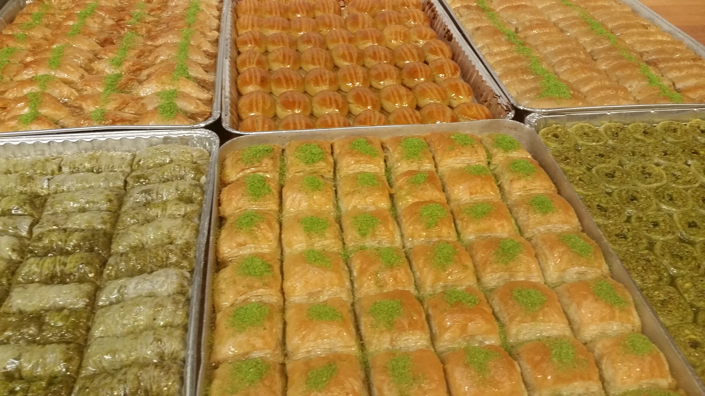
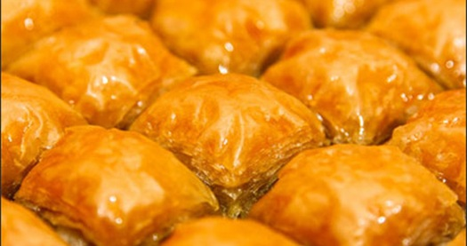

What Is Baklava – and Where To Find the Best Baklava in Istanbul?
You must taste baklava during your stay in Istanbul. The recipe may sound too easy to be true: chopped nuts are spread in between the phyllo (yufka) layers, dressed with butter, baked and sweetened with syrup or honey. But the excellence depends on the quality of the flour, the thinness of the dough (phyllo) and the proportion of the syrup. 
The origin of Baklava
Baklava is a very old pastry. Many ethnic groups with ancestry going back to the Middle East claim the origin of this luscious pastry. The historical documentation is not solid, yet there is strong evidence that its origin comes from Central Asian Turkic tribes.
It is also known that during the Ottoman Empire, in the imperial kitchens of Topkapi Palace, the current form was developed. And later, in the late 19th century, small pastry shops were opened in Istanbul and the provincial capitals.
Baklava as an Aphrodisiac
There was a special reason for baklava being a favorite among the wealthy families and the Ottoman Sultans with their large harems. Pistachio and honey were the two prime elements and when consumed regularly they were believed to be aphrodisiacs. Cloves of two spices, cinnamon for females and cardamom for males, were added to increase the aphrodisiac effect of the pastry.
According to a belief, Gaziantep was the first settlement to introduce baklava in Anatolia. Whether it is true or not, Gaziantep‘s version is famous for the simple fact that the pistachios grown there are really tasty. The nuts used in Turkey for baklava show variations depending on the geographical locations. In Southeast Anatolia the pastry is made with pistachio nuts, in the Black Sea region with hazel nuts, in central Anatolia with walnuts and on the Aegean shores with almonds.
Key Points to Tell if Baklava Is Well-made
- The sound – A crackling sound is what you should hear when you stick your fork into it. If you don’t hear it, then it is not fresh.
- The smell – The creamy fresh butter smell is what you should sense.
- The taste – Admitted, it is supposed to be sweet, no arguments there. Yet, if it burns your throat while swallowing, it means the sugar-dough proportion is not balanced.
- Digestion – In case you have heartburn after your baklava consumption, it means the ingredients were not of good quality. Ease your pain with some mint tea, eat one olive or lick some salt. These cures are not medically proven, but merely based on my personal experiences.
Where to Get Great Baklava?
The two best places to get this sweet desert are Köşkeroğlu and Güllüoğlu. Both establishments are located on the ground floor of the big car park in Karaköy. In case you’re a guest of Witt Istanbul hotel, it’s basically just a walk down the hill, only a few meters from the Karaköy tram stop.
Güllüoğlu also hosts amateur and professional gourmets as well as tourists, and organizes workshops and/or tours in the facility for groups. If you’re interested, ask for Nuray Keskin at +90 212 249 9680 ext. 112.
Köşkeroğlu
Mumhâne Cad. Katlı Otopark Altı No:2/2
Karaköy – Istanbul
Tel: +90 212 243 15 91
Güllüoğlu
Rıhtım Cad. Katlı Otopark Altı No: 3-4
Karaköy – Istanbul
Tel: +90 212 293 09 10